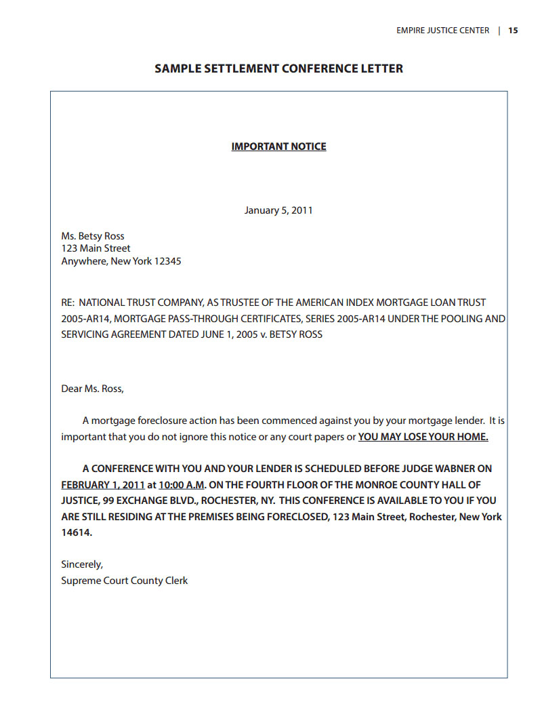

At this point in the process, you have now been made aware through the Summons and Complaint that the Bank has started a foreclosure in the Court system. You may have fi led an Answer or Notice of Appearance, or you may have decided to skip that optional step. Either way, the next step in the process will be the scheduling of a “Settlement Conference”.
Under New York State law, a Settlement Conference must be held if you are living in your 1-to-4 unit home. The idea behind the Settlement Conference is to protect the homeowner. By now, many homeowners will have already contacted the Bank to work out a solution. However, banks can be incredibly diffi cult to work with. Homeowners send the same documents to the Bank many times, only to have the Bank tell them they never received them, or that still more documents are needed. Sometimes, the Bank will take a long time to review your documents, and then tell you that the documents are out of date and therefore you need to send updated documents again.
The idea behind the Settlement Conference is to give the homeowner an opportunity to work with the Bank to come to some alternative to foreclosure, with the Court’s help. The general idea is that until the Bank proves to the Court that they have attempted to fi nd an alternative to foreclosure, the Court will not allow the foreclosure to move forward in the Court system. In this way, the Settlement Conference can be thought of as a “safety zone” for homeowners – while you are in the Settlement Conference phase of the foreclosure process, the foreclosure essentially is “frozen” in the Court system. Therefore, you do not have to worry about showing up at your house to fi nd the locks changed, or a notice saying you must be out of your house in days, or any of the other horror stories you may have read about from other parts of the country.
You should receive a letter in the mail from the Court with the time, date and place of the Settlement Conference. The notice of your Settlement Conference typically comes a few weeks after the Summons and Complaint. The notice will also list the documents you should bring with you to the Settlement Conference.
If you do not show up at your fi rst scheduled Settlement Conference without contacting the Court, the Court may declare this stage of the foreclosure to be over, and allow the foreclosure to move forward. This is your best opportunity to work with the Bank and attempt to save your home, but it only can work if you take an active part in the process.
If for some reason you cannot attend the scheduled Settlement Conference, you will need to contact the Court to reschedule. Contact information can be found in the front folder pocket of this guidebook. You should do this as soon as you realize there is a confl ict. If you have received a Summons and Complaint, but have not received the notice for a Settlement Conference yet, you should call the Court and ask if one is scheduled. Page 15 shows an example of the letter you will receive from the Court regarding the scheduling of your Settlement Conference.
The homeowner can appear at a Settlement Conference with or without an attorney. (Appearing without an attorney is referred to as appearing “pro se”.) The Bank must have a representative available at the Settlement Conference. Typically, this will be the Bank’s attorney.
The Settlement Conference is your opportunity to work with the Bank and try to fi nd an alternative to foreclosure. You will describe your situation; the Court may ask questions about your fi nances, your income and your debts. The Court may also ask whether you have any savings set aside. The Bank should be able to describe how much you owe and how this amount was calculated. There will be no witnesses or testimony, it is simply an opportunity for both sides to ask questions and explore solutions.
The Bank will likely give the homeowner a packet of forms that must be fi lled out and returned to the Bank, so that the Bank can review your loan for a possible “loan modifi cation.” The forms the Bank asks you to fi ll out are designed to give the Bank a snapshot of your current fi nancial situation. Therefore, they will ask about both your income and your monthly expenses. Some of the forms will be specifi c to your Bank, while others will be forms used by all banks as required by federal law. In addition, most banks will ask for your most recent bank statements and a copy of your income taxes. Again, this is used to have a better understanding of your fi nancial situation.
It is very rare that you will be able to come to an agreement with the Bank at the fi rst Settlement Conference. What typically happens is that the Court will schedule another Settlement Conference for you.